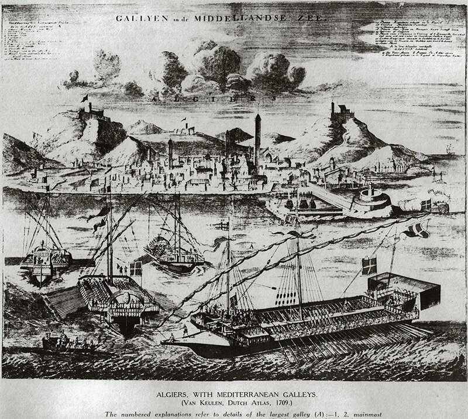
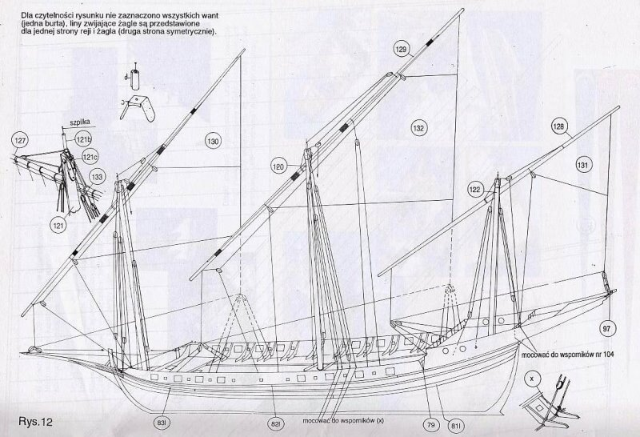
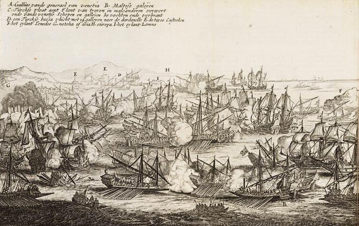

Организацию военно-морских сил Мальтийского ордена мы начали рассматривать несколько дней назад. Сейчас поговорим подробнее об их основной боевой составляющей – эскадре галер.
На Мальту рыцари ордена прибыли в 1530 году, имея три галеры, две каракки, один корабль, который в документах назывался галеон и несколько бригантин (список источников, подтверждающих эти цифры, можно найти в диссертации Ayşe Devrim Atauz, Trade, Piracy and Naval Warfare in the Central Mediterranean: the Maritime History and Archaeology of Malta, 2004).
Боевое ядро флота состояло из галер Santa Maria (типа Capitana), Santa Caterina и San Giovanni, остальные единицы представляли собой транспортные суда, вооруженные пушками для самообороны. Мы уже подробно рассматривали все положительные качества галер в более ранних постах, поэтому не будем сейчас останавливаться на причинах их широкого использования в войнах на Средиземном море. К рассмотренным ранее качествам можно, пожалуй, добавить только одно – возможность быстро восстановить корабельный состав флота после потери значительной его части. Яркий пример – спустя всего лишь два года после сокрушительного поражения при Лепанто флот Османской империи насчитывал уже более 200 кораблей.
Время эффективного использования галер в то время в среднем составляло от шести до восьми лет. Еще об одной особенности галер стоит упомянуть: они использовались только в группе, одиночное использование галер было неэффективным. Вследствие взаимного влияния технологии постройки галер в различных странах отличия в их конструкции были крайне незначительны, за исключением может быть внешнего убранства. Галеры Мальтийского ордена были практически такими же, как галеры, построенные в Венеции, Марселе или Стамбуле. Тем более, что нередко Мальта заказывала постройку своих галер на верфях других европейских стран.
Флагманская галера, на которой держал флаг Генерал галер, называлась ‘Capitana’. Этот тип галер отличался большими размерами, имел от 28 до 30 весел на каждом борту и по пять гребцов на каждом весле. Для движения под парусами имелось две, иногда три мачты с латинским вооружением. Отличительной их особенностью было также наличие большой кормовой надстройки (carosse) и окраска в красный цвет. Основные размерения галеры ‘Capitana’: длина между перпендикулярами 184 фута (56,08 м); наибольшая ширина по обшивке 24 5/6 фута (7,56 м); осадка 8 ½ футов (2,6 м). Артиллерийское вооружение – одно 36-фунтовое, два восьми- и два шестифунтовых орудия на носу, 18 кулеврин и 18 мушкетов по бортам.
Вторая по величине и вооружению галера имела тип ‘Padrona’ и по 27 весел на каждом борту. Стандартные галеры имели по 26 весел на борт.

Помимо галер в эскадру входили и меньшие по размеру гребные суда – галиоты (galleot) – быстроходные парусно-гребные корабли, оснащенные одной мачтой с латинским парусом и вооруженные мушкетами и фальконетами (perriers). Вследствие малых размеров, галиоты имели небольшую автономность и обычно использовались корсарами, действующими под мальтийским флагом, хотя иногда включались в боевую эскадру ордена в качестве разведывательных кораблей и кораблей связи. Для вспомогательных функций использовались также другие малые суда: тартаны, полугалеры (mezzagalera) и, уже в восемнадцатом веке, корабли арабского происхождения шебеки (chebec или xebec(катал.)).

Шебека (чертеж)
Отмечены также другие суда мусульманского происхождения petacchio, caique и fregatina. Последние два типа представляли собой малые гребные суда, которые находились на буксире у галер и использовались как средство снабжения у отмелей, а также для буксировки галер в узостях или на якорных стоянках. Фрегатины служили также средством передвижения для капитана и офицеров галеры, а также в качестве посыльных судов.
Количество галер в эскадре менялось от периода к периоду. Мы уже говорили, что на Мальту в 1530 году прибыло три галеры. В захвате Модона участвовало лишь два корабля. К 1532 году количество галер достигло четырех и эта цифра сохранялась в течение двадцати шести лет. В 1558 состав галерной эскадры был доведен до пяти единиц и это количество не изменялось в течение длительного времени, за одним исключением: в 1564 году число галер сократилось до четырех, а в 1565 году, в период непосредственной подготовки к отражению турецкого наступления и осады Мальты, было доведено до девяти корпусов. После снятия осады, потребность в средствах на восстановление разрушенных фортификационных сооружений потребовала экономии и, как следствие, сокращения численности эскадры до четырех галер. А в битве при Лепанто Мальтийский орден смог выставить в состав флота Священной лиги, насчитывающий 207 галер, только три галеры.
В 1584 году число галер было вновь доведено до пяти. Эта цифра поддерживалась до 1627 года. После постепенного увеличения численности в 1627, 1651 и 1685 году, корабельный состав галерной эскадры достиг восьми единиц и поддерживался на этом уровне в течение всего периода активных действий флота на стороне Венеции во время войны в Морее до 1701 года.

Дарданелльское сражение (1656)(Pieter Casteleyn, 1657)
Затем последовал период постепенного сокращения численности эскадры и размеров входящих в нее кораблей, так что к 1720 году мы видим уже на рейде Мальты лишь четыре галеры.
Если возьмем в качестве среднего срока службы галеры семь лет, то несложный расчет показывает, что между 1530 и 1798 годами общее количество галер, находившихся в боевом составе флота Мальтийского ордена, достигает 200 единиц. Эти галеры были построены на верфях самой Мальты, а также в других арсеналах средиземноморских стран. Об этом – в следующий раз.